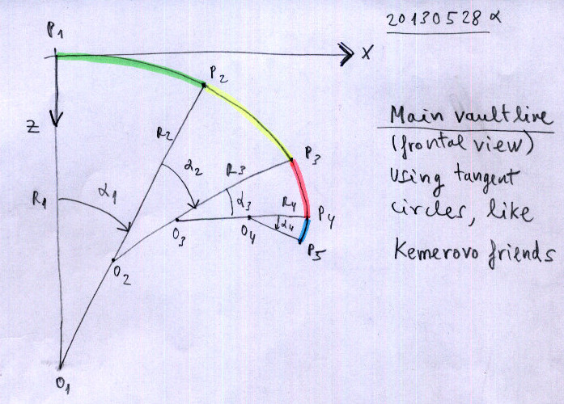

Geometrie Fenster
Detaillierte Erklärungen zum Geometrie Fenster.
Das Geometrie Fenster ist in 5 Abschnitte unterteilt:
- Flügelname
- Eintrittskante
- Austrittskante
- Wölbung
- Zellenverteilung
Die Parameter für Eintritts- und Austrittskante sowie Wölbung können jeweils in den Eingabefeldern auf der linken Seite verändert werden.
Parameter der Eintrittskante

Parameter der Austrittskante

Parameter der Wölbung
Sin-Cos modif

Radius-Angle modif
Mit [Apply] werden die Eingaben bestätigt und die Grafiken auf der rechten Fensterseite aktualisiert.
ACHTUNG: Die eingegebenen Werte werden aktuell nicht überprüft! Es besteht die Möglichkeit dass nicht immer eine gültige Geometrie berechnet werden kann.
Detaillierte Erklärungen findet man auf der Entwickler Website: Laboratory d'envol => Software => pre-processor